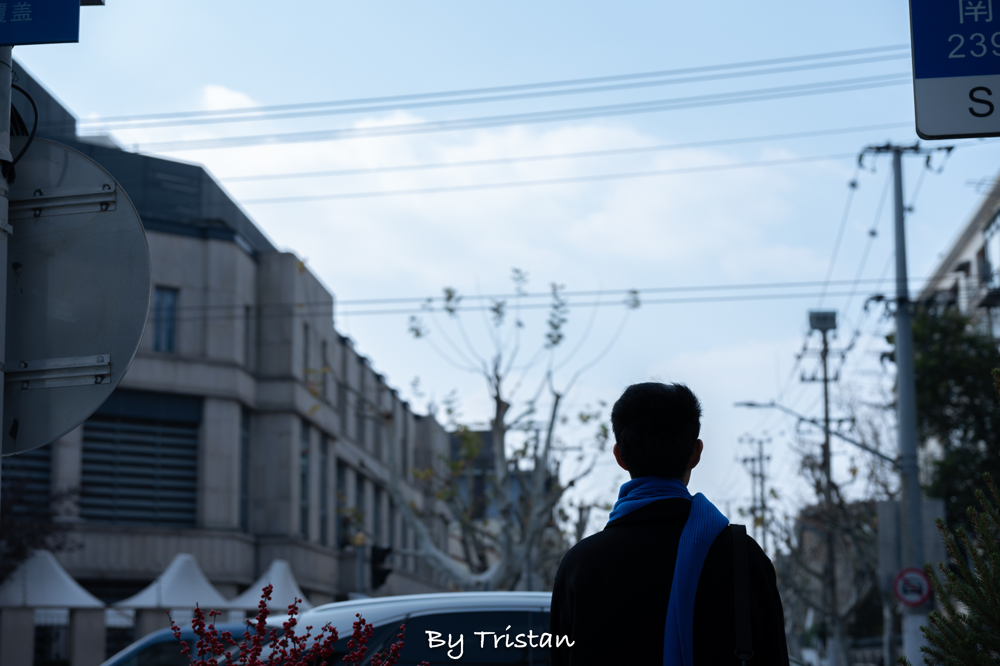
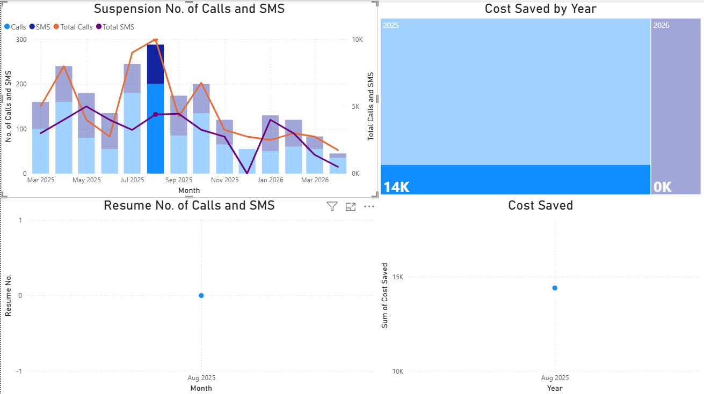
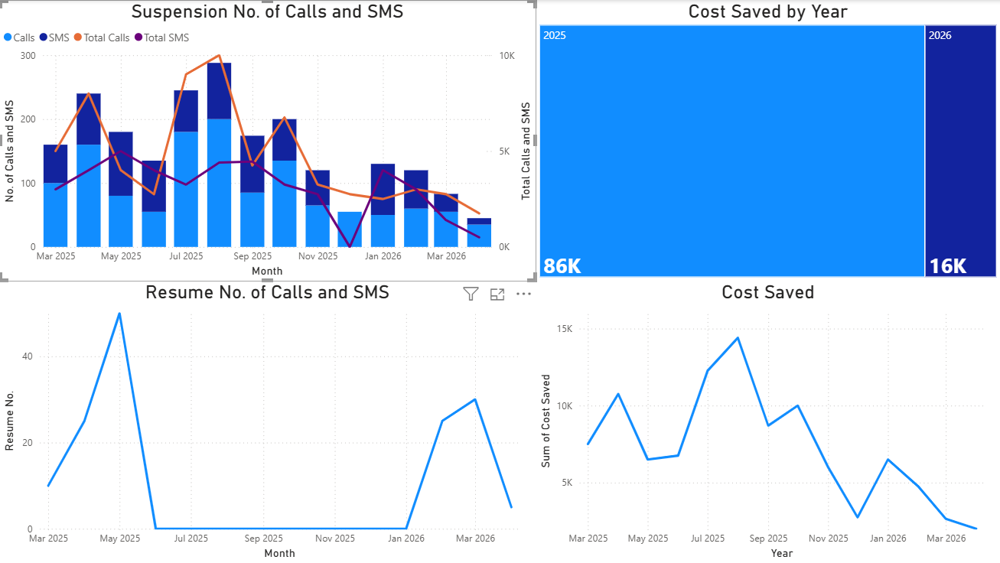

Tristan WONG
Fraud and Data Security Officer at Hutchison Telecom Hong Kong
The Hong Kong Polytechnic University
About Me
Tristan is a dedicated Fraud Prevention and Data Security professional focused on translating policy into actionable technical defenses. He specializes in building resilient security postures by integrating automation, data analytics, and cross-functional collaboration. His recent focus has evolved from technical execution to orchestrating a cohesive defense framework—extending security governance from core operations to supply chain partners and regional branches. He is passionate about combating telecom fraud, ensuring data privacy compliance, and leveraging emerging technologies to stay ahead of financial crime patterns.
My Hobbies
My work in West Lake (Xihu), Hangzhou, Zhejiang Province:

Commercial Projects Hightlights
Data analysis with Power BI at Hutchison Telecom Hong Kong

This picture above shows statistics of a specific month, including suspension number of calls and SMS, resume number as well as cost saved. Once suspended, the company can save some cost and the offenders do not continue to use the network services and result in company's financial loss.

This picture above shows the whole statistics from March 2025 to April 2026, including suspension number of calls and SMS, resume number as well as cost saved. Once suspended, the company can save some cost and the offenders do not continue to use the network services and result in company's financial loss.***The data does not result in any conflict of interest because of test use and reference only.***
💼 Employment
Fraud and Data Security Officer at Hutchison Telecom Hong Kong
08/2025 -
Acted as a coordination hub for security initiatives, partnering with Macau/HK branches on digital campaigns, cross-departmental teams on SIM audits, and external vendors to unify security protocols.
Programmer at Sonnet Business Systems Limited
10/2023 - 05/2024
Delivered software solutions for healthcare clients, enhancing operational efficiency and data processing capabilities.
Project Assistant at The Hong Kong Polytechnic University
06/2022 - 02/2023
Led end-to-end development and optimization of web platforms, enhancing performance, usability, and security.
Student Assistant at The Hong Kong Polytechnic University
05/2021 - 11/2021
Supported the development, optimization, and maintenance of the Finance Office website, enhancing user engagement and operational efficiency.
Education
BSc (Hons) Degree in Information Security
The Hong Kong Polytechnic University
2020 - 2022
Courses to be added here
Associate Degree in Information Technology
Hong Kong Community College, The Hong Kong Polytechnic University
2018 - 2020
Courses to be added here
Secondary School
Yan Chai Hospital Lan Chi Pat Memorial Secondary School
2012 - 2018
Primary School and Junior Secondary School
Shenzhen, PRC
Before 2012
📬 Contact
Contact Information
- thebut888@yahoo.com.hk
- Hong Kong SAR, PRC